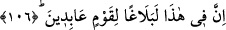

mü’minlerin geneli “vâris olacaktır.” diye yazmıştık.” Nitekim Allah Teâlâ: “Allah,
sizlerden îman edip iyi davranışlarda bulunanlara, kendilerinden öncekileri sahip
ve hâkim kıldığı gibi onları da yeryüzüne sahip ve hâkim kılacağını… vaadetti.”
(en-Nûr, 24/55) Bu, Allah’tan dini gâlib kılacağına ve ehlini aziz kılacağına dâir bir
vaaddir.
İbn Abbas (r. anhümâ)’dan rivâyet edildiğine göre sâlih kulların vâris olacağı yer ile
cennet murâd edilmiştir. Nitekim şu âyet bunu haber vermektedir: “Bize verdiği sözde
sâdık olan ve bizi, dilediğimiz yerinde oturacağımız bu cennet yurduna vâris kılan
Allah’a hamdolsun.” (ez-Zümer, 39/74)
Baklî’nin Arâis’inde şöyle denilmiştir: “Allah’ın ezelî ilminde cennet arzına sâlih
kullarından zâhidlerin, âbidlerin ebrârın ve ahyârın vâris oldukları mevcuttu. Çünkü
bunlar bedel, sevâb ve derecelerin ehlidirler. Allah’ın ezelî celâlini müşâhedeye ise
O’nun ma‘rifetinin, muhabbetinin, şevkinin ve aşkının ehli olanlar vâris olmuşlardır.
Çünkü
onlar,
rubûbiyyet
müşâhedesindedirler.
Cennet
ehli
ise
ubûdiyyet
müşâhedesindedirler.”
Sehl şöyle der: “Âyette Allah onları kendisine izâfe etti ve onlara sâlihlik hullesini
giydirdi. Bunun mânâsı, bana ancak benim için hâlis olan, benden başkasının onda bir
eseri olmayan uygun olur, demektir. Onlar, gönüllerini Allah ile ıslâh eden ve O’ndan
başka her şeyden tamamen kesilen kimselerdir.
Şeyh Mağribî (k.s.) der ki:
Gönlümüzde dosttan gayrisini arama, bulamazsın
Bu yüzdendir ki Mahmud’un gönlünde Ayaz’dan başkası yoktur
106. İşte bunda, (bize) kulluk eden bir kavim için bir öğüt vardır.
“İşte bunda,” bu sûredeki haberlerde, açık öğütlerde, vaadlerde, tehdidlerde, tevhid
ve nübüvvetin sıhhatine dâir kesin delillerde “(bize) kulluk eden” himmet ve gayretleri
âdet değil ibâdet olan “bir kavim için” yeterli “bir öğüt vardır.”
[219]. Ebû Dâvud, Harâc, 6